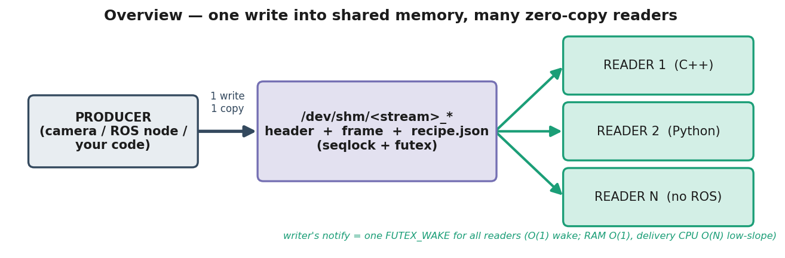

Systems / Robotics Infrastructure · C++17 · Python · ROS 2 · Linux shared memory

The Problem
While running a perception setup in NVIDIA Isaac Sim, a setup that should have been simple brought the machine to its knees. Multiple simulated camera feeds had to fan out to a stack of models — YOLO, GroundedDINO, Florence, and several LLM APIs — each needing every feed. The standard approach was to package each model as a ROS 2 node, subscribe to the camera topics, and let ROS 2 handle the plumbing. As it scaled up, the whole thing buckled.
The math was the problem. With N camera streams and K subscribers, every frame from every camera was serialized and copied to every consumer — so transport load scaled as N×K. Three cameras into a handful of models wasn't a handful of streams; it was a multiplying wall of redundant copies — the same megabyte frames serialized and copied over and over, 30 times a second, per camera, per subscriber.
The CPU pinned to 100%. The worst part wasn't even the dropped frames — it was that Isaac Sim itself started hanging under the load. The simulation couldn't keep real time, so its results were no longer meaningful. I wasn't measuring my models; I was measuring my transport choking. The culprit wasn't the models or the code — it was the ROS 2 transport layer underneath: serialize-and-copy, per subscriber, per frame. So I built something to bypass it entirely.
The Solution — A Same-Host Shared-Memory Transport
The producer writes one copy of each frame into /dev/shm, signals readers with a single futex wake, and every consumer maps the same physical pages and reads it in place. One write. One copy in memory, no matter how many models read it. No per-subscriber serialization, no per-subscriber copy, no middleware machinery — and idle readers sit at ~0% CPU instead of spinning. The N×K explosion collapses: the frame exists once, and everyone reads it where it sits.

The Results
I benchmarked it against the three production zero-copy transports — FastDDS data-sharing, CycloneDDS+iceoryx, and ros2_shm_msgs — following industry-standard methodology (Apex.AI's performance_test approach: coordinated-omission-safe scheduling, percentile distributions, K=4 repeated runs with variance, whole-system CPU accounting, byte-identical payloads across all four).
- ~8× less CPU per consumer — and the gap widens with scale. At 64 subscribers the bridge sat at 78% of one core while the DDS paths burned ~6. At a realistic fan-out of 4–8 models, it's already ~10–16× leaner.
- Flat RAM no matter how many consumers — one physical copy, mapped by all. Genuinely O(1) in subscriber count.
- The only transport that held ~30 fps with zero frame loss out to 64 consumers — the DDS paths fell behind under CPU load, and CycloneDDS hit a hard limit at 32.
- Type-agnostic — works with any of the ~330 ROS message types (25 heavy types take a true zero-copy path; the rest fall back cleanly), not just a fixed handful.
Benchmarks
Delivered rate vs subscribers — the bridge holds full rate while every DDS path collapses under CPU pressure (CycloneDDS crashes at 32).

Latency vs subscribers — DDS-loaned wins at a single subscriber, but the curves cross near N≈16; beyond that the bridge leads as the DDS paths become CPU-starved.

Latency vs payload size (single subscriber) — the one axis where true zero-copy DDS-loaned is categorically better: it hands over a pointer (flat in size) while the bridge copies bytes (O(size)).

It's Also ROS-Agnostic
The writer can pull from a ROS 2 topic, but the reader doesn't need ROS at all. It writes raw bytes, so any process that can mmap a file can consume the stream — a plain Python script, a CUDA program, or a model server in a separate conda env can read your camera frames directly, with zero ROS overhead and zero bridging.
This matters because not every CV model ships as a ROS 2 package — and plenty of the newest perception and foundation models never will. They arrive as Python libraries, inference servers, or API wrappers. This lets you feed them the live stream without forcing them into the ROS graph first.
Why It Matters on Real Hardware
The benchmark gaps above were measured on a single machine with everything in one process — the most forgiving possible setup. On a real deployment the difference explodes. Real robots run each model as its own process, often across separate machines, where the per-subscriber overhead DDS pays — discovery, executors, cross-process copies — stacks up fast. Everything the controlled benchmark removed is overhead the DDS stack pays in production and the shared-memory path mostly doesn't. The advantage shown here is the floor, not the ceiling.
And lower CPU isn't just a benchmark number. Every core you're not spending on moving bytes is a core left for inference, planning, and control. On battery-powered and edge robots, it's directly less power drawn and more thermal headroom. The transport getting out of the way is the whole point.
Scope
For a single subscriber, the established DDS methods still have the edge on latency — they're heavily optimized for that case. The bridge's advantage is CPU efficiency across every process, and it pulls further ahead as the number of subscribers grows. Which is exactly the problem I started with: many cameras, many models, one machine.
Tech Stack
- C++17 core — lock-free seqlock writer +
FUTEX_WAKEsignalling. - Linux shared memory (
/dev/shm,mmap) — one physical copy, mapped by all readers. - ROS 2 (Humble) — type-agnostic writer covering all 330 topic message types (FLAT zero-copy + CDR fallback).
- Python adapter speaking the same
/dev/shmcontract, plus a pybind11 wrapper. - Benchmark harness following Apex.AI
performance_testmethodology.